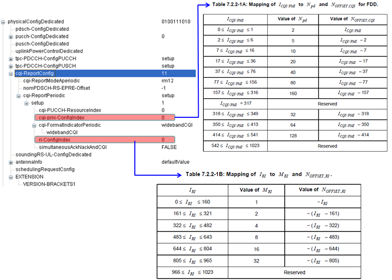
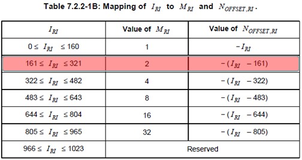

LTE Quick Reference Go Back To Index Home : www.sharetechnote.com
CQI, PMI, RI Reporting Configuration
When (on which subframe, with what interval) the CQI is transmitted ? There are two types of CQI transmission : Periodic and Aperiodic.
- Periodic CQI : CQI is transmitted periodically with a certain interval specified by higher layer message(e.g, RRC Connection Reconfiguration, RRC Connection Setup).
- Aperiodic CQI : CQI is transmitted by a special trigger (e.g, DCI0, RACH Response).
Let's look into Periodic Report first. As mentioned above, in Periodic report configuration CQI/PMI/RI is transmitted periodically with a certain interval specified by higher layer message(e.g, RRC Connection Reconfiguration, RRC Connection Setup)
Following RRC configuration (RRC Connection Setup or RRC Connection Reconfiguration) notifies UE of CQI, PMI, RI reporting configuration.

But just from RRC message and the two tables (from 36.213), you cannot know exactly at which subframe the CQI/PMI/RI are transmitted. To figure out the exact time stamp (SFN and subframe) you have to go through several mathematical equations as follows. These two equations are only part of the story. You have to refer to 36.213 7.2.2 Periodic CSI Reporting using PUCCH. You will see the many different cases of reporting cycle. I just use this two example to show you how to interpret these equation.
Following is an example when CQI only is being transmitted. Npd and N_OFFSET,CQI configured by RRC Connection Setup and RRC Connection Reconfiguration and the value itself came from Table 7.2.2-1A of 36.213.

The equation itself will be quite simple, but just to doublecheck your understanding, let me give you a short quizz (don't get panic -:)). Here you go.
If cqi-pmi-Configindex in RRC message is 13. What is Npd and N_OFFSET,CQI ?
This maps to the row of the table as follows. You can read Npd directly. It is 10. Then you need a little bit of math to get N_OFFSET,CQI. The value for this example is specified to be (I_CQI/PMI-7). It is 13-7 which is 6. Now the last step is to apply these two values to the equation above to calculate the exact subframe number for CQI/PMI transmission.

Following is an example where both CQI and RI are being transmitted.
just to doublecheck your understanding, let me give you a short quizz. Here you go.
If ri-Configindex in RRC message is 200. What is M_RI and N_OFFSET,RI ?
This maps to the row of the table as follows. You can read M_RI directly. It is 2. Then you need a little bit of math to get N_OFFSET,RI. The value for this example is specified to be -(I_RI-161). It is -(200-161) which is -39. Now the last step is to apply these two values to the equation above to calculate the exact subframe number for RI transmission.
